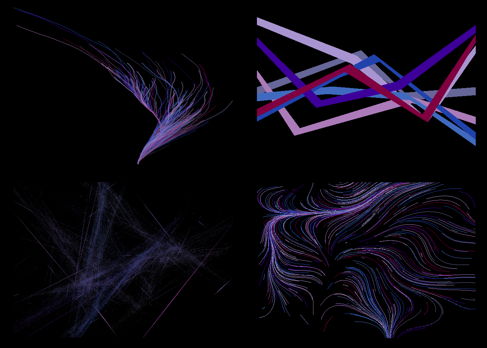
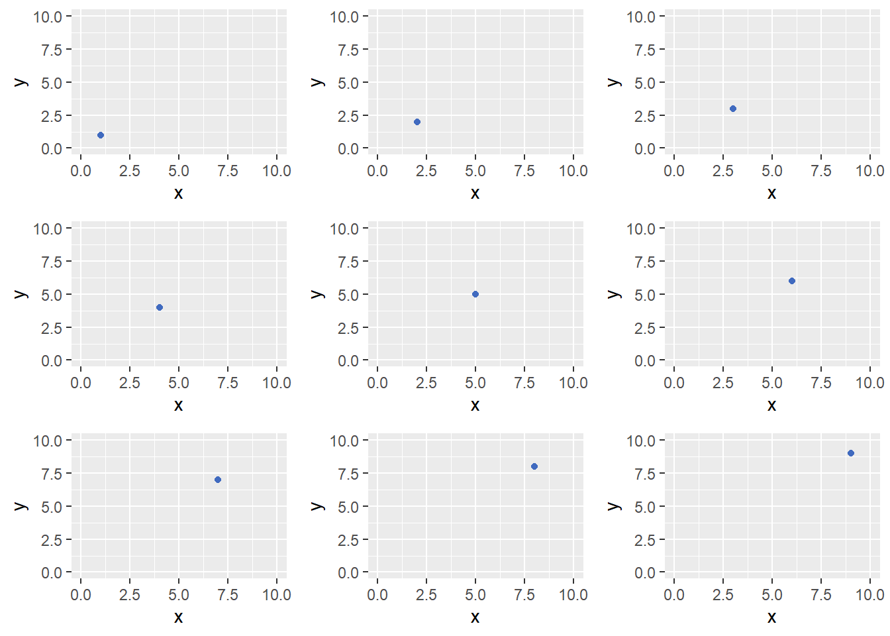
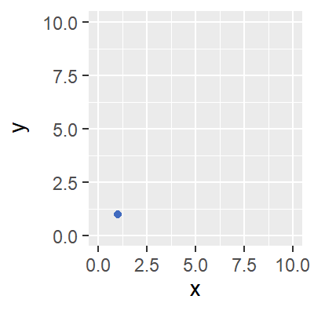
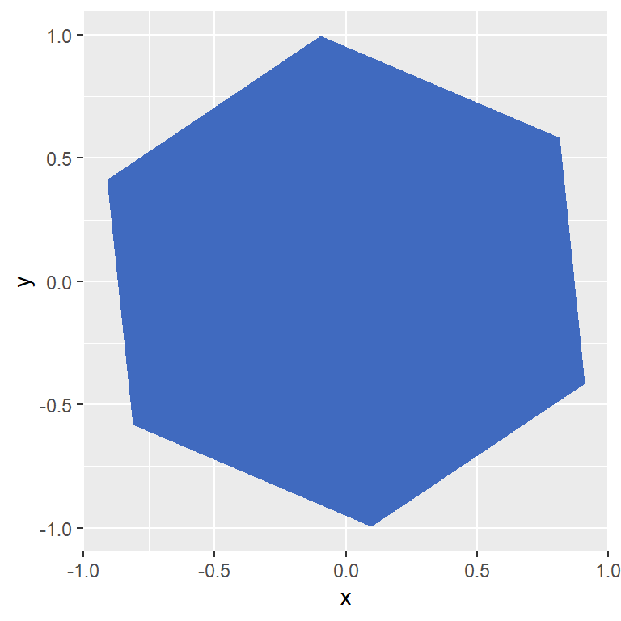
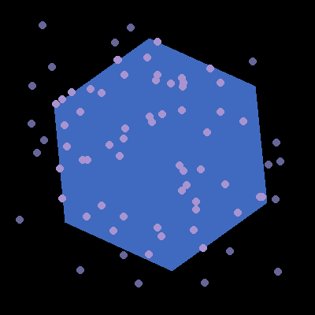
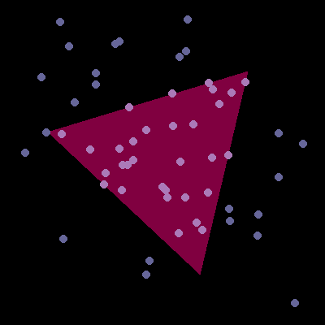

library(aRtsy) # to print out a few examples I like
library(gridExtra) # to arrange multiple images in one plot
library(ggplot2) # to draw my own pictures
library(gganimate) # to turn multiple static images into an animationGenerative Art
An exploration of using R to produce artwork, from static images to animations
Intro/Overview
I came across a few blog posts about using R to generate art which piqued my interest. For readers unfamiliar with the idea, the aRtsy package is a great reference. It implements a large suite of different algorithms which are used to draw interesting patterns. I was inspired by the idea of using R for art instead of analysis and wanted to try it out myself.
While I love the content in the aRtsy package, one limitation (at least at the time I’m writing this) is that the package only produces static images. My idea for a new contribution in this space would be to make a generative animation.
Setting Up
Loading Libraries
Inspiration from the aRtsy package
I’ll start by printing out a few examples using the basic functions of the aRtsy package. This is partly to showcase how easy it is for a user to play with, and partly to have an excuse to add nice artwork to my site. While it is easy to colorPalette() function provided by the aRtsy package to pick colors at random, making your own color palette is just a matter of picking a few colors you like, so that’s what I’ll do here. I just googled “hex color picker” and found this site which helped me identify the hex values for a few colors I liked.
my_color_palette = c("#666699", "#a894d1", "#ab7ab8", "#406abf", "#1f42ad", "#3d0099", "#800040")
set.seed(5813)
p1 <- canvas_collatz(colors = my_color_palette, background = "#000000")
set.seed(1818)
p2 <- canvas_ribbons(colors = my_color_palette, background = "#000000", triangle = FALSE)
set.seed(4497)
p3 <- canvas_flame(colors = my_color_palette, background = "#000000")
set.seed(9819)
p4 <- canvas_flow(colors = my_color_palette, background = "#000000")
grid.arrange(p1, p2, p3, p4, ncol = 2)
One of the most convenient aspects of the way these functions are designed is that they require very little input from the user to generate new random pictures. All it takes to generate a new image is to set a different seed. I will try to follow the same approach, designing a function to create a specific type of image and using a random seed to drive the contents generated for the images.
Initial Concept
The functions from the aRtsy package are each based on a specific algorithm, the output from which is transformed in such a way that it generates interesting images. I am not sure how to do that, so I will have to work backwards and start with an idea of what kind of images I want to generate, and then create an algorithm that accomplishes that task.
Similar to aRtsy, I will rely on the ggplot2 package to draw images. This means I can then use the gganimate package (which works well with ggplot2) to turn multiple images into an animation. The gganimate package creates transitions for the different shapes that ggplot2 can draw. That means if I can represent my desired animation as multiple frames, or sequential plots, then the gganimate package can blend those frames together into an animation.
df <- data.frame(x = 1:9, y = 1:9, id = 1:9, t = 1:9)
plot_list <- lapply(1:9, function(x){
df_subset = df[df$t == x,]
p = ggplot(df_subset, aes(x = x, y = y)) +
geom_point(color = "#406abf") +
scale_x_continuous(limits = c(0, 10)) +
scale_y_continuous(limits = c(0, 10))
return(p)
})
do.call("grid.arrange", c(plot_list, ncol = 3))
p = ggplot(df, aes(x = x, y = y, group = id)) +
geom_point(color = "#406abf") +
scale_x_continuous(limits = c(0, 10)) +
scale_y_continuous(limits = c(0, 10)) +
transition_time(t) +
ease_aes("linear")
animate(p, nframes = 90, fps = 30, width = 400, height = 400, units = "px")
I will choose to use points because they are simple to work with and generating a lot of them at random might produce an interesting animation. In order to have something more interesting than just points moving around in the plot, I will introduce a polygon in the center. Randomness can enter this animation in a few ways, such as the number of sides this polygon has and its rotation, the positions of the points that will move through the plot, and the color scheme.
Designing the Algorithm
Since the intention is to incorporate randomness, I start by setting the seed so that the steps I am trying out can be reproduced for testing if necessary.
set.seed(1)There are a few pieces of the concept to design around which include the polygon, the points, and the transitions.
The Polygon
Adding a polygon to the plot is probably most interesting if it takes up a lot of space and is at the center of the plot. If it is small and off to one side it won’t have much impact. My first idea is to start with the unit circle. Pick some number of points on the edge of the unit circle and then if you connect those points you should wind up with a shape inscribed in the unit circle. Randomness can be introduced by randomly picking how many sides this polygon should have. It should be an integer number which is at least 3 so that it has positive area, and no more than 10 because adding more and more sides will just make the polygons closer and closer to an actual circle which will mean less variation in the shapes which is less interesting.
I start by picking the first point at random, which is just a random angle at which the point will exist on the unit circle. Then I randomly pick the number of sides the polygon will have. With those two pieces of information, the locations of the other points can be generated by taking equally spaced steps along the unit circle where the step size is based on the number of sides desired.
theta = 2*pi*runif(1)
n_sides = sample(3:10, 1)
# initialize all points as the same starting point
df_shape = data.frame(
x = rep(cos(theta), n_sides),
y = rep(sin(theta), n_sides)
)
# apply rotation for each point sequentially
for(i in 2:n_sides){
df_shape$x[i] = df_shape$x[i-1] * cos(2*pi/n_sides) - df_shape$y[i-1] * sin(2*pi/n_sides)
df_shape$y[i] = df_shape$x[i-1] * sin(2*pi/n_sides) + df_shape$y[i-1] * cos(2*pi/n_sides)
}
ggplot() +
geom_polygon(aes(x = x, y = y), data = df_shape, fill = "#406abf")
The Points
Next comes the points. The points will have their positions and velocities randomly generated. The time at which they appear in the plot will also be random. I will start with 1000 points and see how well that works, it can be be updated easily later if necessary. They will move from the top left of the plot towards the bottom right covering about 5% of the distance per frame, plus or minus some random normal noise.
n_obs = 1000
df_pts = data.frame(
id = 1:n_obs,
t = sample.int(400, size = n_obs, replace = TRUE),
x = 0,
y = 2.8*runif(n_obs) - 1.4,
v_x = 0.1 + 0.02*rnorm(n_obs),
v_y = -0.1 + 0.02*rnorm(n_obs)
)Calculating Intersections
Since there are both points and a big polygon in the image, an obvious thing to do to make it more interesting is to change the behavior based on whether or not they overlap. This means figuring out when they are overlapping and when they are not.
One way to think about this is that each point has an x and y velocity, so it is traveling in a straight path, or a line. Similarly, the polygon in the center has a random number of sides between 3 and 10, and if you think of those sides as continuing beyond the edges of the polygon then they are just lines. So we can figure out where the point enters and exits the polygon by calculating where these lines intersect.
If we have two lines represented by an equation like \(y = mx + b\) then the intersection will be where the x values are equal and the y values are also equal. We set \(y_1 = y_2\) and \(x_1 = x_2\) and solve for \(x\) and \(y\).
\[ \begin{aligned} y_1 - m_1x_1 - b_1 &= y_2 - m_2x_2 - b_2 \\ y - m_1x - b_1 &= y - m_2x - b_2 \\ (m_2 - m_1)x &= b_1 - b_2 \\ x &= (b_1 - b_2)/(m_2 - m_1) \end{aligned} \]
This gives the x-coordinate of the intersection point, which can be plugged back into the original equation for the line \(y_1 = m_1x_1 + b_1\) to get the y-coordinate.
If the polygon has 10 sides, there will now be 10 intersection points, one intersection of each point’s trajectory with each of the 10 lines. But the point should only pass through the polygon in 2 places. This is because the polygon is not actually 10 lines but 10 line segments, so many of the intersections that were just calculated lie outside the bounds of the polygon shape. These incorrect intersection points can be removed by adding a filter to condition on points that lie inside the unit circle.
\[ x^2 + y^2 <= r^2 \hspace{35pt} (r = 1) \]
Since the polygon was originally designed to be inscribed within the unit circle, that constraint can be used here to validate which intersection points are the correct ones. Furthermore, I can identify which of the two valid intersection points is the entry vs exit of point’s path through the polygon based on which has the lower x-value, since the velocity in the x direction is positive.
# add the first row of the polygon data frame to the end
# to make it convenient to calculate parameters for polygon lines
df_shape_loop = df_shape
df_shape_loop = rbind(df_shape_loop, df_shape[1,])
# initialize data frame to hold candidate intersection point
# x-coordinates, will add a new column for each intersection
df_x_intersect = rep(NA, nrow(df_pts))
# parameters for the lines from the points
# can be calculated outside the loop
# m1 and b1 are both vectors
m1 = df_pts$v_y / df_pts$v_x
b1 = df_pts$y - m1*df_pts$x
# calculate one intersection for each line (segment) from the polygon
for(i in 2:nrow(df_shape_loop)){
# m2 and b2 are scalars here
m2 = (df_shape_loop$y[i] - df_shape_loop$y[i-1]) / (df_shape_loop$x[i] - df_shape_loop$x[i-1])
b2 = df_shape_loop$y[i] - m2*df_shape_loop$x[i]
x_intersect = (b1 - b2)/(m2 - m1)
df_x_intersect = cbind(df_x_intersect, x_intersect)
}
# calculate corresponding y-coordinate for each intersection
df_y_intersect = sweep(df_x_intersect, 1, m1, FUN="*")
df_y_intersect = sweep(df_y_intersect, 1, b1, FUN="+")
# check which 2 out of the 3+ intersections are valid
# all valid intersection must lie within the unit circle
check_valid = (sqrt(df_x_intersect^2 + df_y_intersect^2) <= 1)
check_valid[check_valid == 0] = NA
# replace invalid intersection points with NA
df_x_intersect = df_x_intersect*check_valid
# calculate entry and exit points
x_entry = apply(df_x_intersect, 1, min, na.rm = TRUE)
x_entry = ifelse(is.finite(x_entry), x_entry, NA)
x_exit = apply(df_x_intersect, 1, max, na.rm = TRUE)
x_exit = ifelse(is.finite(x_exit), x_exit, NA)
y_entry = m1*x_entry + b1
y_exit = m1*x_exit + b1
# consolidate entry and exit points into a data frame
df_entry_exit = as.data.frame(cbind(x_entry, y_entry, x_exit, y_exit))
# cut speed of point in half inside the polygon
df_entry_exit$n_frames = ceiling((df_entry_exit$x_exit - df_entry_exit$x_entry)/(df_pts$v_x/2))
df_entry_exit$v_x = (df_entry_exit$x_exit - df_entry_exit$x_entry)/df_entry_exit$n_frames
df_entry_exit$v_y = (df_entry_exit$y_exit - df_entry_exit$y_entry)/df_entry_exit$n_framesNot all of the randomly generated points will actually come into contact with the polygon. This will require handling separately. If a point will never come into contact with the polygon, it will stay unchanged and be flagged as not in contact. If a point does contact the polygon at some point, I will change it’s initial value to be the point where it first contacts the polygon and flag it as in contact.
df_pts$x = ifelse(is.na(df_entry_exit$x_entry), 0, df_entry_exit$x_entry)
df_pts$y = ifelse(is.na(df_entry_exit$y_entry), df_pts$y, df_entry_exit$y_entry)
df_pts$contact = ifelse(is.na(df_entry_exit$x_entry), 0, 1)Calculating Movement
Now that all the points have been initialized I need to calculate how their positions will change over time. As the time step increases by one, the x and y positions should update based on the v_x and v_y velocity parameters. Since points will start either in the center of the plot or where they first make contact with the polygon, I will work out their motion backwards from their initialized location. I can then handle motion while in contact with the polygon as a separate case, and then motion forwards again after exiting the polygon.
The first thing to do is to save the initialized state in a new variable so it can be used again later. After that, the data frame that contains the points will be updated to add their positions moving backwards in time.
# save initialized state
df_init = df_pts
# work backwards 15 frames
# to get position of points before contact
# with polygon or center of canvas
df_backwards = df_init
df_backwards$contact = 0
for(i in 1:15){
df_backwards$t = df_backwards$t - 1
df_backwards$x = df_backwards$x - df_backwards$v_x
df_backwards$y = df_backwards$y - df_backwards$v_y
# append to points data
df_pts = rbind(df_pts, df_backwards)
}Next comes movement within the polygon. Not all point come into contact with the polygon, so this should only be done for the points where contact occurs.
# get the subset of initialized points which
# make contact with the polygon
df_within = df_init
df_within$v_x = df_entry_exit$v_x
df_within$v_y = df_entry_exit$v_y
df_within$n_frames = df_entry_exit$n_frames
df_within = df_within[df_within$contact == 1,]
# add one frame at contact position
# basically, the point will appear to pause
# when it hits the polygon
df_within$t = df_within$t + 1
df_pts = rbind(df_pts, df_within[,-which(colnames(df_within)=="n_frames")])
# different points will spend different amounts of time
# traversing the polygon, so only keep iterating
# for the points that have not reached the other side yet
for(i in 1:max(df_within$n_frames)){
df_within = df_within[df_within$n_frames >= i,]
df_within$t = df_within$t + 1
df_within$x = df_within$x + df_within$v_x
df_within$y = df_within$y + df_within$v_y
# append to points data
df_pts = rbind(df_pts, df_within[,-which(colnames(df_within)=="n_frames")])
}Finally there is the forwards movement either from the center of the plot to the right or from exiting the polygon to the right.
# reset locations for points that contact the polygon
# to be at the location where they exit, and also add 2
# to their time index to create a delay on exit
df_forwards = df_init
df_forwards$x = ifelse(is.na(df_entry_exit$x_exit), df_init$x, df_entry_exit$x_exit)
df_forwards$y = ifelse(is.na(df_entry_exit$y_exit), df_init$y, df_entry_exit$y_exit)
df_forwards$t = ifelse(is.na(df_entry_exit$n_frames), df_forwards$t, df_forwards$t + df_entry_exit$n_frames + 2)
df_forwards$contact = 0
# work forwards 15 frames past exit from polygon
# to get position of points as they exit the canvas
for(i in 1:15){
df_forwards$t = df_forwards$t + 1
df_forwards$x = df_forwards$x + df_forwards$v_x
df_forwards$y = df_forwards$y + df_forwards$v_y
# append to points data
df_pts = rbind(df_pts, df_forwards)
}Cleanup
While calculating point positions, I picked a number of time steps to make sure that motion within the bounds of the plot is being captured. If the plot x-axis covers [-1.25, 1.25] and average velocity in the x direction is 0.1 then it should take around (1.2 + 1.2)/0.1 = 24 time steps to get from side of the plot to the other, or 12 steps backwards from the center of the plot, and 12 steps forwards. In previous sections I calculated 15 time steps in each direction to be conservative due to the randomness added to the point velocities. In addition to this, motion within the polygon is handled separately. There will also be cases where points only pass through small sections of the plot such as at the top right or bottom left. This means there are many point locations that have been calculated which are outside the bounds of the plot and should be thrown away.
df_pts = df_pts[(df_pts$x >= -1.2) & (df_pts$x <= 1.2),]
df_pts = df_pts[(df_pts$y >= -1.2) & (df_pts$y <= 1.2),]First Animation
All the pieces are in place. Now it’s time to combine all these time and position values into an animation. Here’s a first pass at fitting it all together.
margin = 0
p = ggplot() +
geom_polygon(aes(x = x, y = y), data = df_shape, fill = my_color_palette[4]) +
geom_point(aes(x = x, y = y, group = id, color = as.factor(contact)), data = df_pts) +
scale_color_manual(values = my_color_palette[1:2]) +
scale_x_continuous(limits = c(-1.2, 1.2)) +
scale_y_continuous(limits = c(-1.2, 1.2)) +
theme(
axis.title = ggplot2::element_blank(),
axis.text = ggplot2::element_blank(),
axis.ticks = ggplot2::element_blank(),
axis.line = ggplot2::element_blank(),
legend.position = "none",
plot.background = ggplot2::element_rect(fill = "#000000", colour = "#000000"),
panel.border = ggplot2::element_blank(),
panel.grid = ggplot2::element_blank(),
plot.margin = ggplot2::unit(rep(margin, 4), "lines"),
strip.background = ggplot2::element_blank(),
strip.text = ggplot2::element_blank(),
panel.background = ggplot2::element_blank()
) +
transition_time(t) +
ease_aes("linear")
animate(p, nframes = 1500, fps = 30, width = 400, height = 400, units = "px")A Smooth Loop
This looks pretty good, but there are clear points where the animation is beginning and ending. One more change could be made here to make the animation loop more smoothly or seamlessly.
# take points from just after the start of the animation
# and use them to replace points towards the end
pts_start = unique(df_pts$id[df_pts$t == 51])
pts_remove = unique(df_pts$id[df_pts$t >= 350])
df_loop = df_pts[df_pts$id %in% pts_start,]
df_loop$t = df_loop$t + 299
df_loop$id = df_loop$id + n_obs
df_pts = df_pts[!(df_pts$id %in% pts_remove),]
df_pts = rbind(df_pts, df_loop)
# limit data shown to the window that starts and ends
# with the copied points
df_plot = df_pts[(df_pts$t >= 51) & (df_pts$t <= 350),]Now the animation should look like a continuous loop with no obvious starting or stopping point.
margin = 0
p = ggplot() +
geom_polygon(aes(x = x, y = y), data = df_shape, fill = my_color_palette[4]) +
geom_point(aes(x = x, y = y, group = id, color = as.factor(contact)), data = df_plot) +
scale_color_manual(values = my_color_palette[1:2]) +
scale_x_continuous(limits = c(-1.2, 1.2)) +
scale_y_continuous(limits = c(-1.2, 1.2)) +
theme(
axis.title = ggplot2::element_blank(),
axis.text = ggplot2::element_blank(),
axis.ticks = ggplot2::element_blank(),
axis.line = ggplot2::element_blank(),
legend.position = "none",
plot.background = ggplot2::element_rect(fill = "#000000", colour = "#000000"),
panel.border = ggplot2::element_blank(),
panel.grid = ggplot2::element_blank(),
plot.margin = ggplot2::unit(rep(margin, 4), "lines"),
strip.background = ggplot2::element_blank(),
strip.text = ggplot2::element_blank(),
panel.background = ggplot2::element_blank()
) +
transition_time(t) +
ease_aes("linear")
animate(p, nframes = 1500, fps = 30, width = 400, height = 400, units = "px")
Final Function
The last piece of the puzzle is to wrap all of this up into one function so that it can be used the same way as the functions in the aRtsy package. It will take in 3 optional inputs. One is the seed, which can be set outside the function like in aRtsy, or can be passed as an argument. Another is a color palette, if the user doesn’t provide one that is fine, it should just pick colors randomly. Last is a background color, with similar behavior where it is picked randomly if not specified.
draw_polygon_animation = function(seed = NULL, color_palette = NULL, background = NULL){
# set seed here if it was passed as an argument
if(!is.null(seed)){ set.seed(seed) }
# if color palette is given use that
# otherwise pick randomly from default colors
color_vec = grDevices::colors()[grep('gr(a|e)y', grDevices::colors(), invert = T)]
if(!is.null(color_palette)){ color_vec = color_palette }
# if background color is provided use it as the first color
# otherwise pick randomly
colors4 = sample(color_vec, 4)
if(!is.null(background)){ colors4[1] = background }
# picking start rotation and sides for polygon randomly
theta = 2*pi*runif(1)
n_sides = sample(3:10, 1)
# initialize all polygon vertices as the same starting point
df_shape = data.frame(
x = rep(cos(theta), n_sides),
y = rep(sin(theta), n_sides)
)
# apply rotation for each point sequentially
for(i in 2:n_sides){
df_shape$x[i] = df_shape$x[i-1] * cos(2*pi/n_sides) - df_shape$y[i-1] * sin(2*pi/n_sides)
df_shape$y[i] = df_shape$x[i-1] * sin(2*pi/n_sides) + df_shape$y[i-1] * cos(2*pi/n_sides)
}
# initialize points
n_obs = 1000
df_pts = data.frame(
id = 1:n_obs,
t = sample.int(400, size = n_obs, replace = TRUE),
x = 0,
y = 2.8*runif(n_obs) - 1.4,
v_x = 0.1 + 0.02*rnorm(n_obs),
v_y = -0.1 + 0.02*rnorm(n_obs)
)
# add the first row of the polygon data frame to the end
# to make it convenient to calculate parameters for polygon lines
df_shape_loop = df_shape
df_shape_loop = rbind(df_shape_loop, df_shape[1,])
# initialize data frame to hold candidate intersection point
# x-coordinates, will add a new column for each intersection
df_x_intersect = rep(NA, nrow(df_pts))
# parameters for the lines from the points
# can be calculated outside the loop
# m1 and b1 are both vectors
m1 = df_pts$v_y / df_pts$v_x
b1 = df_pts$y - m1*df_pts$x
# calculate one intersection for each line (segment) from the polygon
for(i in 2:nrow(df_shape_loop)){
# m2 and b2 are scalars here
m2 = (df_shape_loop$y[i] - df_shape_loop$y[i-1]) / (df_shape_loop$x[i] - df_shape_loop$x[i-1])
b2 = df_shape_loop$y[i] - m2*df_shape_loop$x[i]
x_intersect = (b1 - b2)/(m2 - m1)
df_x_intersect = cbind(df_x_intersect, x_intersect)
}
# calculate corresponding y-coordinate for each intersection
df_y_intersect = sweep(df_x_intersect, 1, m1, FUN="*")
df_y_intersect = sweep(df_y_intersect, 1, b1, FUN="+")
# check which 2 out of the 3+ intersections are valid
# all valid intersection must lie within the unit circle
check_valid = (sqrt(df_x_intersect^2 + df_y_intersect^2) <= 1)
check_valid[check_valid == 0] = NA
# replace invalid intersection points with NA
df_x_intersect = df_x_intersect*check_valid
# calculate entry and exit points
x_entry = apply(df_x_intersect, 1, min, na.rm = TRUE)
x_entry = ifelse(is.finite(x_entry), x_entry, NA)
x_exit = apply(df_x_intersect, 1, max, na.rm = TRUE)
x_exit = ifelse(is.finite(x_exit), x_exit, NA)
y_entry = m1*x_entry + b1
y_exit = m1*x_exit + b1
# consolidate entry and exit points into a data frame
df_entry_exit = as.data.frame(cbind(x_entry, y_entry, x_exit, y_exit))
# cut speed of point in half inside the polygon
df_entry_exit$n_frames = ceiling((df_entry_exit$x_exit - df_entry_exit$x_entry)/(df_pts$v_x/2))
df_entry_exit$v_x = (df_entry_exit$x_exit - df_entry_exit$x_entry)/df_entry_exit$n_frames
df_entry_exit$v_y = (df_entry_exit$y_exit - df_entry_exit$y_entry)/df_entry_exit$n_frames
# reset starting locations
df_pts$x = ifelse(is.na(df_entry_exit$x_entry), 0, df_entry_exit$x_entry)
df_pts$y = ifelse(is.na(df_entry_exit$y_entry), df_pts$y, df_entry_exit$y_entry)
df_pts$contact = ifelse(is.na(df_entry_exit$x_entry), 0, 1)
# save initialized state
df_init = df_pts
# work backwards 15 frames
# to get position of points before contact
# with polygon or center of canvas
df_backwards = df_init
df_backwards$contact = 0
for(i in 1:15){
df_backwards$t = df_backwards$t - 1
df_backwards$x = df_backwards$x - df_backwards$v_x
df_backwards$y = df_backwards$y - df_backwards$v_y
# append to points data
df_pts = rbind(df_pts, df_backwards)
}
# get the subset of initialized points which
# make contact with the polygon
df_within = df_init
df_within$v_x = df_entry_exit$v_x
df_within$v_y = df_entry_exit$v_y
df_within$n_frames = df_entry_exit$n_frames
df_within = df_within[df_within$contact == 1,]
# add one frame at contact position
# basically, the point will appear to pause
# when it hits the polygon
df_within$t = df_within$t + 1
df_pts = rbind(df_pts, df_within[,-which(colnames(df_within)=="n_frames")])
# different points will spend different amounts of time
# traversing the polygon, so only keep iterating
# for the points that have not reached the other side yet
for(i in 1:max(df_within$n_frames)){
df_within = df_within[df_within$n_frames >= i,]
df_within$t = df_within$t + 1
df_within$x = df_within$x + df_within$v_x
df_within$y = df_within$y + df_within$v_y
# append to points data
df_pts = rbind(df_pts, df_within[,-which(colnames(df_within)=="n_frames")])
}
# reset locations for points that contact the polygon
# to be at the location where they exit, and also add 2
# to their time index to create a delay on exit
df_forwards = df_init
df_forwards$x = ifelse(is.na(df_entry_exit$x_exit), df_init$x, df_entry_exit$x_exit)
df_forwards$y = ifelse(is.na(df_entry_exit$y_exit), df_init$y, df_entry_exit$y_exit)
df_forwards$t = ifelse(is.na(df_entry_exit$n_frames), df_forwards$t, df_forwards$t + df_entry_exit$n_frames + 2)
df_forwards$contact = 0
# work forwards 15 frames past exit from polygon
# to get position of points as they exit the canvas
for(i in 1:15){
df_forwards$t = df_forwards$t + 1
df_forwards$x = df_forwards$x + df_forwards$v_x
df_forwards$y = df_forwards$y + df_forwards$v_y
# append to points data
df_pts = rbind(df_pts, df_forwards)
}
# remove points located outside of plot window
df_pts = df_pts[(df_pts$x >= -1.2) & (df_pts$x <= 1.2),]
df_pts = df_pts[(df_pts$y >= -1.2) & (df_pts$y <= 1.2),]
# make the loop continuous
# take points from just after the start of the animation
# and use them to replace points towards the end
pts_start = unique(df_pts$id[df_pts$t == 51])
pts_remove = unique(df_pts$id[df_pts$t >= 350])
df_loop = df_pts[df_pts$id %in% pts_start,]
df_loop$t = df_loop$t + 299
df_loop$id = df_loop$id + n_obs
df_pts = df_pts[!(df_pts$id %in% pts_remove),]
df_pts = rbind(df_pts, df_loop)
# limit data shown to the window that starts and ends
# with the copied points
df_plot = df_pts[(df_pts$t >= 51) & (df_pts$t <= 350),]
# animation
margin = 0
p = ggplot() +
geom_polygon(aes(x = x, y = y), data = df_shape, fill = colors4[2]) +
geom_point(aes(x = x, y = y, group = id, color = as.factor(contact)), data = df_plot) +
scale_color_manual(values = colors4[3:4]) +
scale_x_continuous(limits = c(-1.2, 1.2)) +
scale_y_continuous(limits = c(-1.2, 1.2)) +
theme(
axis.title = ggplot2::element_blank(),
axis.text = ggplot2::element_blank(),
axis.ticks = ggplot2::element_blank(),
axis.line = ggplot2::element_blank(),
legend.position = "none",
plot.background = ggplot2::element_rect(fill = colors4[1], color = colors4[1]),
panel.border = ggplot2::element_blank(),
panel.grid = ggplot2::element_blank(),
plot.margin = ggplot2::unit(rep(margin, 4), "lines"),
strip.background = ggplot2::element_blank(),
strip.text = ggplot2::element_blank(),
panel.background = ggplot2::element_blank()
) +
transition_time(t) +
ease_aes("linear")
animate(p, nframes = 1500, fps = 30, width = 400, height = 400, units = "px")
}Conclusion
This was a fun creative exercise exploring a topic very different from the data analysis I normally use R for. Despite being about making art, it was still a very technical exercise and the concept I came up with used a lot of basic algebra and geometry concepts. Hopefully aspects of this will prove useful in future endeavors.
draw_polygon_animation(seed = 2172, color_palette = my_color_palette, background = "#000000")